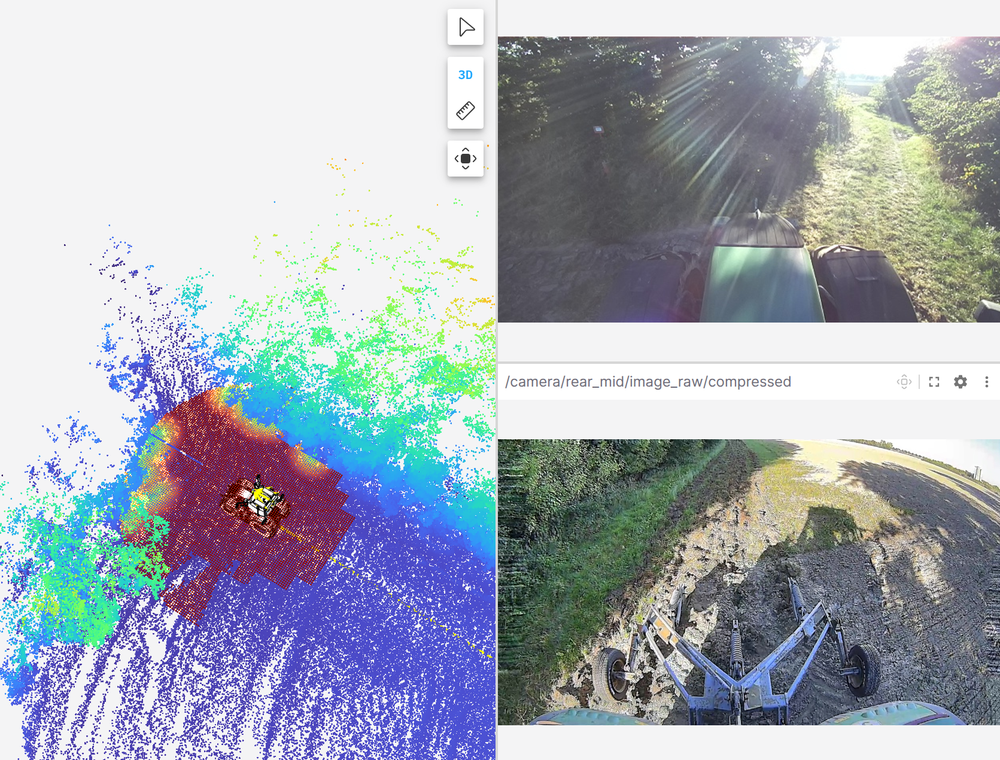
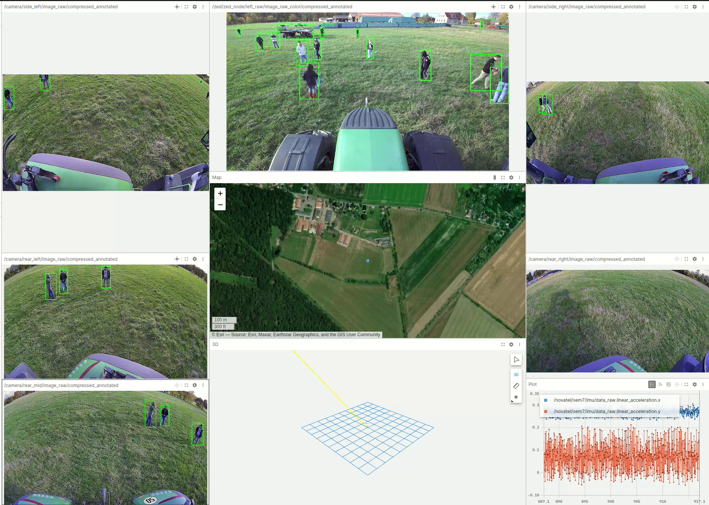
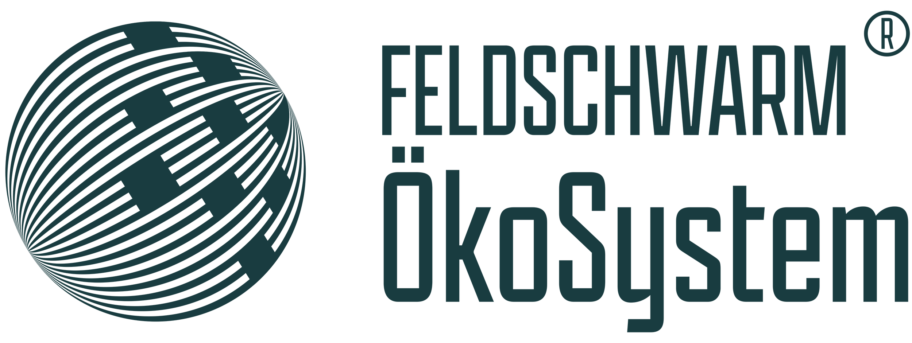
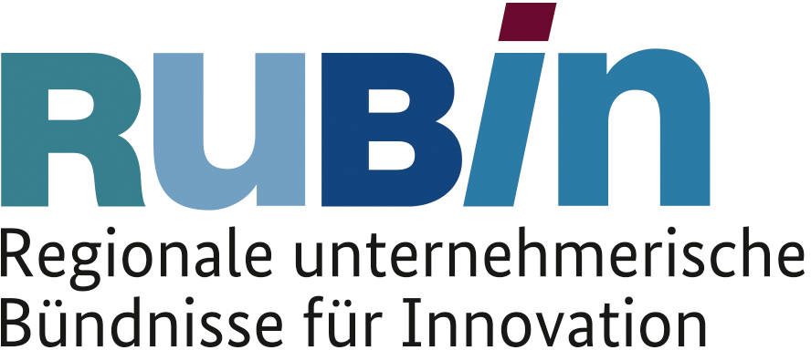

Data Collection from Real Fieldwork
In collaboration with the Lehr- und Forschungsgut Oberholz of Leipzig University, we equipped a Fendt 724 tractor with a multi-modal sensor setup to record daily field operations under real working conditions. The video below shows an example scene from our synchronized recording pipeline and illustrates the rich visual context captured for agricultural autonomy research.
Perception Demonstrators
Beyond raw sensor collection, the dataset supports perception-oriented autonomy tasks such as free-space reasoning and human-aware scene understanding in agricultural environments.

Traversability Estimation
Free-space reasoning for safe navigation
Traversability estimation highlights drivable free space in front of the vehicle and provides a strong basis for route planning, control, and safety monitoring in unstructured field conditions.

People Detection
Human-aware perception in the field
People detection supports safety-critical autonomy by identifying nearby workers and bystanders in challenging outdoor scenes, enabling risk-aware operation around humans and machinery.
Windrow Detection Paper
Publication Demo
Real-time windrow detection for automated following
The demonstrator visualizes the centerline extraction pipeline used for automated windrow following from onboard stereo and LiDAR measurements.
Paper
Real-Time Windrow Detection from Onboard Tractor Sensors for Automated Following
This paper presents a real-world multi-modal dataset for windrow-following research, recorded during baling operations with tractor-mounted stereo vision, LiDAR, and GNSS sensors. Based on this dataset, the work introduces a real-time centroid-based detection pipeline running at more than 20 Hz on a Jetson AGX Orin and shows strong agreement between stereo and LiDAR measurements in the key 4-10 m guidance range.
L. Gunreben, N. Heider, S. Zürner, M. Schieck, and B. Franczyk, "Real-time windrow detection from onboard tractor sensors for automated following," in 46. GIL-Jahrestagung, Gesellschaft für Informatik e.V., 2026, in press.
LiDAR Point Clouds
The Ouster OS0 LiDAR (128 scanlines) is mounted forward-facing with a 45° downward tilt at a height of 3 meters. This configuration captures a high-resolution 3D point cloud of the environment, supporting precise mapping and localization, object detection, and use as a deterministic safety sensor. Below is a registered point cloud of the farmyard environment as captured by the LiDAR.

LiDAR registration showing the farmyard of the research farm of Leipzig University (Lehr- und Forschungsgut Oberholz).
Funded by

